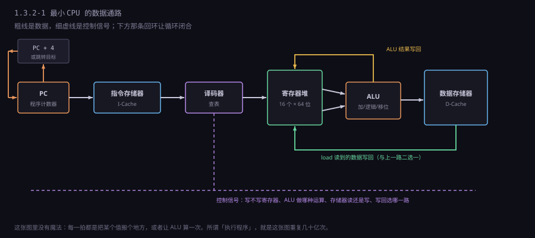
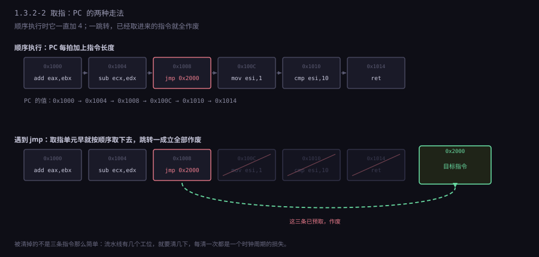
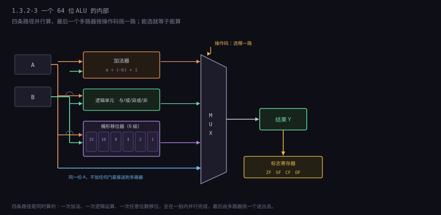
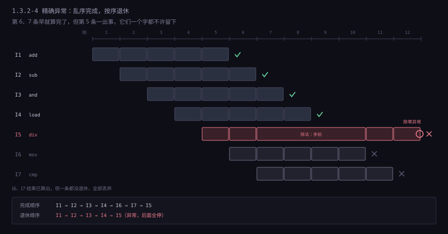
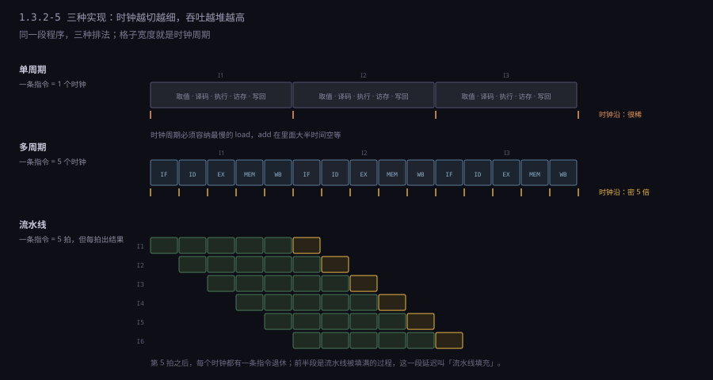

约 1.2 万字 · 6 张图 · 读完你能画出一台最小 CPU 的数据通路、 说清一条 load 为什么比一条 add 慢五十倍、并且明白 「主频 × IPC」这个乘法里，每一项是怎么来的
先看一台能跑程序的最小机器需要哪些零件。不要想高级特性，就想要能执行
add eax, ebx 和 jmp 这两条指令。
| 零件 | 作用 | 它回答的问题 |
|---|---|---|
| 程序计数器 PC | 存「下一条指令在哪」 | 我该去哪儿拿指令 |
| 指令存储器 / 指令缓存 | 按地址吐出若干个字节 | 那个地址上写着什么 |
| 译码器 | 把字节翻译成控制信号 | 这串字节要干什么 |
| 寄存器堆 | 一小片能同时读两个、写一个的存储 | 操作数在哪 |
| 运算器 ALU | 做加减、与或、比较 | 算出来是多少 |
| 数据存储器 / 数据缓存 | 装变量、数组、堆栈 | 那个地址上存的是什么 |
| 控制单元 | 决定每一步谁开谁关 | 这一拍该让哪个门导通 |

把这张图按时间切开，就是四步：
① 取指 IF PC → 指令存储器 → 取出这条指令的字节，PC 指向下一条
② 译码 ID 字节 → 译码器 → 「ALU 做加法、读 0 号和 3 号寄存器、结果写 1 号」
③ 执行 EX 寄存器堆读出两个值 → ALU 算 → 同时算出访存地址
访存 MEM （只有 load/store 才真的去读或写数据存储器）
④ 写回 WB 结果写进寄存器堆；标志位更新；这条指令「退休」真实处理器把这四步拆成五级，中间多一级「访存」（MEM）， 因为读写数据存储器本身要时间，单独拿出来更好排。 所以教科书里的经典流水线是 IF、ID、EX、MEM、WB 五级。 本节标题写四步，是把访存算在执行里——概念上是四件事，实现上常分五级。
有一点必须现在说清楚：这四步不是「一条指令做完了才做下一步」。 在最早的机器上确实是那样串行的，但现代机器里， 第一条指令在写回的时候，第二条在执行，第三条在译码，第四条在取指。 四步变成了四条并行的流水线工位，每个时钟都有一条新指令进来、一条旧指令出去。
这是理解 CPU 的第一个台阶：它的快不来自「一步做得快」，来自「四步同时在干不同的活」。 后面 1.3.4 讲流水线，讲的就是这条流水线怎么被各种事情打断。 这一节先把单个工位看清楚。
PC 是一个寄存器，里面存一个地址。取指单元拿这个地址去指令缓存里读， 读出来的字节送去译码，同时把 PC 加上这条指令的长度。 就这么简单，简单到只有一个问题：长度是多少。
ARM64 每条 4 字节，所以取指单元永远做 PC + 4。 x86 的指令 1 到 15 字节，取指单元必须先算出长度才能更新 PC。 这一步在 x86 上叫「指令长度译码」（length decoding）， 它和真正的译码是两件事：先要知道这条指令有几个字节， 才能知道下一条从哪开始。
ARM64：
PC = 0x1000 → 取 4 字节 → 译码 → PC = 0x1004
PC = 0x1004 → 取 4 字节 → 译码 → PC = 0x1008
x86-64：
PC = 0x1000 → 取若干字节 → 先扫出「这条 5 字节」 → PC = 0x1005
PC = 0x1005 → 取若干字节 → 扫出「这条 3 字节」 → PC = 0x1008
顺序执行时，PC 是一条直线地往前爬。遇到跳转就断了：
jmp 把 PC 直接改成目标地址，call 改成目标地址并把返回地址压栈，
条件跳转则要看标志位决定改不改。
这里出现了一个贯穿后面所有章节的矛盾： 取指是流水线的第一级，但「跳不跳」要到执行阶段才知道。 等知道的时候，取指单元已经按顺序取了四五条指令进来， 这些指令全白取了，还要从流水线里清掉。这就是分支预测要解决的问题 （1.3.4 细讲）。这一节只需要记住：PC 每被改写一次，流水线就要打个嗝。

jmp 0x2000，但取指单元在执行它之前就已经把 0x100C、0x1010、0x1014 三条指令取进来了——这三条是「按顺序猜的」，跳转一旦成立，它们全部作废，流水线要清空重来。清空的代价不是零，它等于流水线的深度乘以一个时钟周期。取指这一步看起来只是「按地址读内存」，但它自己也可能错过。 指令不在 L1 指令缓存里，就要去 L2、L3、内存拿， 一次几十到几百个周期。这时候取指单元不是干等，它会做预取： 既然程序大概率是顺序执行的，那就顺便把后面几行也取进来。 预取的准确率直接决定前端能不能喂饱后端， 所以现代处理器会跟踪「最近哪些指令块被连续取过」， 甚至会记住某个分支上次跳去了哪里。
指令缓存和数据缓存是分开的。这个设计叫哈佛结构
（以 1940 年代哈佛 Mark I 命名），和冯·诺依曼结构相对。
分开的理由很实际：取指每个周期都要读一次，访存也经常要读一次，
如果共用一个缓存，两者就会抢端口——这叫结构冒险。
分成两个独立缓存，取指和数据访问可以同时进行，冲突消失。
代价是同一块内存可能在两个缓存里各有一份，
如果程序自己修改了自己的代码，硬件不一定知道要同步
（这就是「自修改代码」在 x86 上必须 jmp 一下、
在 ARM 上必须执行一段缓存维护指令的原因）。
PC 有多宽，决定了程序能有多大。32 位 PC 只能寻址 4 GB，
这是 32 位系统「单个进程最多用 2 GB 或 3 GB 内存」的根源。
64 位 PC 理论上能寻址 16 EB，实际上现在只用了低 48 位（256 TB），
上面那 16 位必须和第 47 位一样（符号扩展），这叫「规范地址」。
你如果在内核里看到一个 0xffff8880... 的指针，那不是负数，
那是高半区地址的正常样子。
译码器做的事，说穿了就是查表。输入是操作码那几位，输出是几十根控制线：
| 控制信号 | 它管什么 | 取值来自哪里 |
|---|---|---|
| ALU 操作 | 加、减、与、或、异或、移位、比较 | 操作码 |
| 源寄存器号 | 从寄存器堆哪两个口读 | ModRM 里的 reg / r/m 字段 |
| 目的寄存器号 | 写回时写到哪个寄存器 | 同上，方向由操作码决定 |
| 是否写寄存器 | 这条指令有没有结果要写 | 操作码（cmp 就不写） |
| 是否访存 | 要不要读写数据存储器 | 操作码 + ModRM 的 mod 字段 |
| 访存方向 | 读还是写 | 操作码 |
| 立即数怎么扩展 | 符号扩展还是零扩展，扩到多宽 | 操作码 + 前缀 |
| 下一条 PC 来源 | PC+4、跳转目标、还是返回地址 | 操作码 |
这些信号不需要「计算」，只需要「连线」。译码器本质上是一大片与门或门， 把操作码的每一位接到合适的地方。这也是为什么 RISC 的译码只要一级： 32 位定长、字段位置固定，操作码在第 0～6 位，源寄存器在第 5～9 位， 目的寄存器在第 0～4 位，接线一固定，信号立刻就出来了。
x86 做不到这一点。同样是 mov，89 是「寄存器写内存」，
8B 是「内存读寄存器」，方向正好相反；源和目的哪个在 ModRM 的 reg 字段、
哪个在 r/m 字段，要看操作码的第 1 位。译码器得先认出操作码，
再决定「怎么解释这个 ModRM」，两步之间有依赖。
这种依赖链让 x86 的译码级比 ARM 长，也更难并行。
所以现代 x86 干脆不在执行阶段用「x86 指令」这个概念。 它把每条 x86 指令译成一到几个定长的微操作（μop）， 之后所有阶段只认 μop：
一条 x86：add eax, [rbx+rcx*4+8]
译成 μop：
μop1 load tmp ← [rbx + rcx*4 + 8] ; 访存
μop2 add eax ← eax + tmp ; 运算每条 μop 大约一百位宽，里面装着：做什么、两个源操作数在哪（物理寄存器编号）、 目的在哪、立即数、以及一堆标志。它是定长的、字段规整的—— 等于在芯片内部把 x86 翻译成了一套 RISC。
μop 有几个实际后果值得知道。第一，解码后的指令会被塞进一个「μop 缓存」，
下次再执行同一段代码可以直接从缓存取 μop，跳过译码——
所以循环体跑第二遍比第一遍快。第二，微码指令（cpuid、
rep movsb）其实是「一串 μop 的模板」，由一个微码定序器逐条吐出来。
第三，一个 x86 指令最多能被拆成四个 μop；超过四个的走微码。
那 x86 的译码器到底怎么算长度？没有捷径，只能扫。它按顺序检查：
先吃掉所有前缀（最多 4 个），看到 0F 就读第二字节，
再看到 38 或 3A 就读第三字节；
然后看这个操作码有没有 ModRM，有的话读 ModRM；
ModRM 的 mod 和 r/m 字段又决定后面有没有 SIB、有没有位移、位移是 1 字节还是 4 字节；
最后加上可能的立即数。整个过程是一串「看前一个字节再决定读几个」的判断，
没法并行，只能一级一级往下推。
这条链有多长？最坏情况下要过六七级判断，每级都是几个门延迟。 这就是 x86 译码速度上不去的根本原因：不是工艺问题， 是编码格式让「读下一个字节」这件事依赖于「刚读到的这个字节」。 相比之下 ARM64 的译码没有这种依赖——字段位置全写在规范里， 32 位一进来，操作码、源寄存器、目的寄存器同时就位，几个门延迟就出结果。
ALU 是 CPU 里最像「计算」的部件，但它能做的运算少得出奇。真正的核心只有两种： 加法和选择（多路选择器）。其余都是它们的组合。
减法？a − b = a + (~b) + 1，用同一加法器，把 b 取反、进位输入置 1。
这就是 1.2.3 讲过的补码加法器，一条都不用改。
比较？也是减法，只是不把结果写回去（1.3.1 §9 讲过）。 与、或、异或？一位一位的独立操作，用一排门就行，不涉及进位，比加法还快。
移位？这里有个技巧值得看：桶形移位器（barrel shifter）。 如果要移 0 到 63 位，最笨的办法是串 63 级「移一位」， 延迟 63 个门。桶形移位器把它变成 6 级： 第一级决定移不移 32 位，第二级决定移不移 16 位，依次到 1 位。 6 个二进制位正好能表示 0～63，所以 6 级就够。 从 63 级压到 6 级，代价是每级都要一个 64 选 1 的多路器—— 面积换延迟，这是数字设计里最常见的交易。

乘法比加法贵得多。两个 64 位数相乘，最笨的做法是加 64 次；
实际用的是华莱士树（Wallace tree）：先把 64 个部分积排成树，
用保留进位的加法器一层层压缩，大约 6 到 7 层就能压成两个数，最后做一次加法。
延迟大约 3 到 5 个周期，面积是加法器的几十倍。
这就是为什么编译器宁愿用移位和加法代替小常数乘法
（1.3.1 §12 那个 lea 的例子）。
除法更贵。它没有「一次算完」的电路，只能迭代： 每次试商一位，64 位就要 64 次迭代。硬件上常用 SRT 算法一次试出几位， 但仍然是几十个周期。开方、三角函数、超越函数更慢， 通常靠查表加多项式逼近，用专门的浮点单元算，几十到上百周期。
浮点单元在结构上是独立的。整数 ALU 和浮点乘加器排在两个不同的执行端口上，
所以一条整数加法和一条浮点乘法可以同一拍发射、同一拍算完，
互不干扰。这也是「一条指令几个周期」这个问题必须分指令类型回答的原因：
add 一个周期，imul 三个周期，div 二十到四十个周期，
浮点除法四十到八十个周期，开方更长。
如果一条除以零的除法卡在流水线里，后面的指令能不能先走，就取决于机器有没有乱序能力。
浮点加法看起来和整数加法差不多，其实复杂得多：要先对齐阶码 （把小的那个数的尾数右移，让两个数的指数一样），再相加， 再规格化（把结果左移直到最高位是 1），最后舍入。 三步里任何一步出错都会让结果差一位。IEEE 754 规定的五种舍入模式、 NaN 和无穷的传播规则，让浮点单元的控制逻辑比整数 ALU 复杂一个数量级。
访存这一步听起来简单：给个地址，读一个数。但它是整个四步里唯一可能慢上百倍的一步。
地址从哪来？x86 的寻址方式允许「基址 + 变址 × 比例 + 偏移」， 这个加法由一个专门的地址生成单元（AGU）算。 现代处理器有好几个 AGU，所以一个周期能同时算出好几个地址。 算完地址，先查缓存：
| 在哪 | 典型容量 | 命中延迟 | 相当于多少个时钟 |
|---|---|---|---|
| 寄存器 | 几百字节 | 0 | 0 |
| L1 数据缓存 | 32～64 KB | 约 4 周期 | 4 |
| L2 缓存 | 256 KB～2 MB | 约 12 周期 | 12 |
| L3 缓存 | 8～128 MB | 约 40 周期 | 40 |
| 内存（DRAM） | GB 级 | 约 60～100 纳秒 | 200～400 |
| 固态硬盘 | TB 级 | 约 100 微秒 | 40 万 |
| 机械硬盘 | TB 级 | 约 10 毫秒 | 4000 万 |
最后两行不是 CPU 能直接访问的，它们要经过缺页异常和驱动， 但放在一张表里才能看出数量级的跨度：从寄存器到内存差两个数量级， 从内存到硬盘又差三个数量级。这个跨度是所有存储层次设计的理由， 也是 1.3.5 的主题。
在真的去访问内存之前，还有一个环节几乎所有程序都会碰到：地址翻译。 程序里用的地址是虚拟地址，硬件要先查页表把它翻成物理地址。 页表在内存里，每查一次都要读内存，那还怎么快？ 所以有一个专门的小缓存叫 TLB（translation lookaside buffer）， 存最近用过的「虚拟页 → 物理页」映射，通常只有几十到几百项。
TLB 命中时，地址翻译几乎不要时间，和缓存查找并在一起做。 TLB 不命中就要走「页表遍历」（page walk）：x86-64 是四级页表， 最坏要读四次内存，才能拿到物理地址。四乘两百个周期， 接近一千拍——一次 TLB 未命中的代价，比一次缓存未命中还贵四倍。
这解释了两件在性能分析里很常见的事。第一，为什么「随机访问一个大数组」 比「顺序访问同一个数组」慢得多：顺序访问一页里的 4096 字节只需要一次 TLB 查找， 随机访问每跳一次就可能换一页，TLB 被踢爆。 第二，为什么虚拟机和高并发服务器会用「大页」（2 MB 甚至 1 GB 一页）： 一页装的东西多了，同样的数据量需要的 TLB 项就少，未命中自然少。 大页不是什么高深优化，它就是在省 TLB 这一层。
访存还有一个容易被忽略的细节：对齐。
x86 允许非对齐访问（一个 4 字节整数放在不被 4 整除的地址上），
但硬件要拆成两次总线访问再拼起来，慢一倍。
ARM 默认也允许，但某些配置下会直接触发异常。
C 语言里 struct 的成员会被自动填充对齐，
就是为了避免这种拆分——你在 sizeof(struct) 里看到的那几个"空隙"，
买的就是这个。
更麻烦的是访存和运算在时间上的错位。
add eax, [rbx] 这一条指令既要读内存又要算加法，
而且加法必须等内存读回来才能做。如果那个地址不在缓存里，
这条指令就要卡两百个周期，后面的指令（如果它们不依赖这个结果）
本来可以先做——这就是乱序执行的起点。
写回是四步里最不起眼的一步：把结果写进寄存器堆的目标寄存器。 寄存器堆有两个写口（能同时写两个结果，给双发射用）和两个以上的读口。 写口一开，值就进去了，下一个周期就能读到。
但在现代处理器里，写回和「生效」是两件事。 一条指令算完、结果写进了物理寄存器，这件事叫完成（complete）； 它真正被承认、对程序状态产生影响，叫退休（retire / commit）。 两者之间隔着一段排队：
指令进来 → 译码 → 派发到执行单元 → 执行完（complete）
→ 进入重排序缓冲（ROB）排队
→ 轮到自己、且前面全部退休了 → 退休（retire）
→ 结果写进「架构寄存器」，此时才对程序可见为什么要多这一层？因为异常。 假设第 5 条指令发生除零，而第 6、7 条已经算完了。 如果它们的结果已经写进寄存器，异常处理程序看到的机器状态就是错的—— 它会看到「第 5 条没做完，但第 6、7 条做完了」这种现实中不存在的中途状态。
重排序缓冲解决了这个问题：所有指令按程序顺序排队退休， 第 5 条出异常时，它后面的指令虽然算完了，但一条都没退休， 结果全部丢弃。于是异常处理程序看到的是一个精确的现场： 第 5 条之前全部完成，第 5 条之后全部没发生。 这个性质叫「精确异常」（precise exception），是所有能跑操作系统、 能调度的处理器的必备条件。
这也解释了一个调试时的困惑：崩溃时 rip 指向的指令，
可能不是真正出问题的那条，而是「最后退休的那条」。
因为乱序执行时，出问题的那条可能早就完成了，
但它退休时被判定为异常，于是 rip 记的是它——
在程序顺序上它是「第一条没完成的」，这正是异常处理程序需要的。

退休还有一个副作用：它是性能瓶颈之一。即使执行单元很闲， 如果退休宽度只有每周期 4 条，那 IPC 就永远超不过 4。 这就是为什么现代处理器的「发射宽度」「执行宽度」「退休宽度」三个数字要一起看， 只提高其中一个没有用。
同样这四步，有三种实现方式，对应 CPU 设计史的三个阶段。
单周期实现。一条指令在一个时钟里走完四步。
时钟周期必须容纳最慢的那条路径——通常是 load：
取指、译码、算地址、读数据存储器、写回，一条长链。
假设这条链要 800 皮秒，时钟就只能跑 1.25 GHz。
而简单的 add 可能只要 300 皮秒，剩下的 500 皮秒它就在干等。
一条慢指令拉低了所有指令的速度，这就是单周期的致命缺点。
多周期实现。把一个时钟拆成几个，每条指令用几个时钟走完。 好处是时钟可以快得多（每步只要 200 皮秒）， 而且简单指令能用更少的周期。坏处是要在每步之间加锁存器保存中间结果， 而且同一条指令还是串行的——总时间没变，只是切碎了。
流水线实现。把四步做成四个工位，每个周期四个工位各干一条指令的活。 时钟周期取最慢那一级的时间，但吞吐量变成「每周期完成一条」。 它不减少单条指令的延迟（还是四拍），但把吞吐提高了四倍。

流水线不是免费的。它带来三个新问题，后面的 1.3.4 全在讲它们：
| 问题 | 怎么来的 | 名字 |
|---|---|---|
| 下一条指令可能要用这一条的结果 | 写回在第五拍，下一条第三拍就要读 | 数据冒险（data hazard） |
| 跳转要不要跳还不知道 | 取指早就按顺序取了几条 | 控制冒险（control hazard） |
| 两条指令抢同一个部件 | 一个周期只能访问一次存储器 | 结构冒险（structural hazard） |
结构冒险值得单独看一眼，因为它最容易理解、也最容易被低估。 假设只有一块存储器，既放指令又放数据：取指要读它，load 也要读它， 两者撞在同一拍，只能让一个等。早期的冯·诺依曼机器就是这样， 每拍最多只能做一件事，吞吐被硬件卡死。
解法不是让存储器变快，而是把它拆成两块—— 指令缓存和数据缓存分开（上一节讲过的哈佛结构）， 再加上寄存器堆的双端口设计（同时读两个、写一个）。 这样一来，取指、读操作数、写结果三件事可以在同一拍里并行， 结构冒险基本消失。这个例子说明：流水线的很多问题不是靠更聪明的控制解决的， 是靠把资源复制一份解决的——而复制资源要花面积和电。
数据冒险的常用解法是旁路（forwarding / bypass）： 不等结果写回寄存器，直接从执行单元的出口接到下一条的入口。 这样「写回」这一步在数据上可以被跳过，只保留在「退休」的意义上。 旁路能把大部分数据冒险的代价从两拍降到零拍，它是流水线能真正跑起来的关键。
到这里可以算性能了。最常用的公式：
程序执行时间 = 指令数 × CPI × 时钟周期
= 指令数 ÷ (IPC × 主频)
CPI = cycles per instruction，每条指令平均花几个周期
IPC = instructions per cycle，每周期平均完成几条指令
两者互为倒数（严格说，IPC = 1 / CPI）举一个具体例子。一颗 4 GHz 的处理器，IPC 是 4：
每秒指令数 = 4 × 10⁹ × 4 = 160 亿条
每条指令平均时间 = 1 / (4 × 10⁹) = 0.25 纳秒0.25 纳秒里发生了什么？光在真空里走 7.5 厘米。 在硅里，信号传播速度大约是真空中光速的三分之一， 所以只能走 2.5 厘米——这差不多就是一颗大芯片的对角线长度。 换句话说，一个时钟周期里，信号勉强能从芯片一头跑到另一头。 这就是为什么芯片不能无限做大，也是为什么缓存要一层层贴着核心放。
公式里三个量互相牵制，动一个会带坏另外两个：
| 你改了什么 | 指令数 | CPI | 主频 | 结果 |
|---|---|---|---|---|
| 流水线加深 | 不变 | 变差（冒险罚金变大） | 变高 | 通常净亏，看具体深度 |
| 加宽发射（一次发 4 条） | 不变 | 变好 | 略降（面积功耗） | 净赚，但受限于程序并行度 |
| 加指令（如 SSE 一条算 4 个浮点） | 减少 | 略差 | 不变 | 数据并行时赚很多 |
| 改进编译器 | 减少 | 略好 | 不变 | 白赚，但天花板低 |
| 换更快的存储器 | 不变 | 明显变好 | 不变 | 赚，尤其在访存密集的程序里 |
这张表解释了为什么「主频高就快」是错的。老式的 Pentium 4 跑到 3.8 GHz， 却被 2 GHz 的 Core 2 打得没脾气——因为后者的 IPC 高出近一倍。 性能是乘法，不是加法，只看一个因子一定会判断错。
还有一个更隐蔽的问题：IPC 不是常数，它随程序变。 纯计算的循环可以跑到 IPC 4 以上，一个指针追逐的链表遍历可能只有 0.5—— 因为每次 load 都要等上一次 load 的结果，缓存全不命中。 所以「这颗 CPU 的 IPC 是多少」这个问题本身就不严谨， 应该说「在某某基准测试上 IPC 是多少」。 厂商宣传的 IPC 提升 15%，通常是在一堆精心挑选的测试上取的平均。
前面那些控制信号是谁产生的？两种做法，分界很清楚。
硬布线（hardwired）：用组合逻辑直接译出信号。 输入是指令的操作码和当前流水级的状态，输出是那几十根控制线。 速度快（信号只过几个门），占面积小，但一旦流片就改不了。 ARM、RISC-V、MIPS 的主体都是硬布线。
微码（microcode）：芯片里有一小块只读存储器，叫控制存储器。 每条机器指令对应一段「微程序」，微程序里每条微指令就是一组控制信号。 执行一条机器指令，就是按顺序取出几条微指令、依次驱动总线。 慢（要多读一次存储器），占面积（控制存储器不小），但可以改。
微码的历史很有意思。它本来是 1950 年代 IBM 为了让「改指令集不用重新设计硬件」
发明的，后来被 RISC 运动当成落后技术批判。
但 x86 一直用它，因为 x86 的指令太复杂——rep movsb、
字符串比较、BCD 运算、任务切换，用硬布线实现会疯掉。
更关键的是：微码可以打补丁。 主板 BIOS 里存着一份微码更新，开机时写进 CPU。 2018 年熔断（Meltdown）和幽灵（Spectre）漏洞爆发后， 全球的服务器和 PC 都是靠微码更新撑过来的—— 在硬件不变的情况下，改掉推测执行的行为，代价是性能掉几个百分点。 如果这些逻辑是硬布线的，那些机器就只能报废。
F0 0F C7 C8
（一个带 LOCK 前缀的非法指令）会让处理器的微码定序器进入死循环，
取指单元被锁死，连「取异常处理程序」这件事都做不到，整机死机。
修复办法是操作系统在缺页处理里加一段检测代码——
因为硬件已经坏了，只能从软件绕。
这件事说明：微码是软件，软件就有 bug，而 bug 在已售出的芯片里改不了。
如果世界很美好，指令会一条条顺利走完四步。但机器要能响应外部事件： 键盘按了、网卡收到包、定时器到点、程序除了零、访问的页不在内存里。 这些事都会打断流水线。
打断分两类，区别在于「是谁引起的」：
| 类别 | 来源 | 例子 | 什么时候被处理 |
|---|---|---|---|
| 异常（exception） | 当前指令自己 | 除零、非法指令、缺页、断点、对齐错误 | 同步：执行到这条才发现 |
| 中断（interrupt） | 外部设备或定时器 | 键盘、网卡、时钟节拍、核间消息 | 异步：随时可能来 |
| 陷阱（trap） | 程序自己故意触发 | int 3、syscall、ud2 | 执行到这条时 |
处理流程是固定的一套，硬件和操作系统分工：
① 硬件：把当前 PC、标志位、出错码压栈（或存进专用寄存器）
② 硬件：按异常号查「中断向量表」，跳到对应的处理程序
③ 软件：处理程序保存现场、做该做的事（比如把缺的页读进来）
④ 软件：执行「从中断返回」指令，硬件恢复 PC 和标志位，继续跑关键在于第一步：压进去的 PC 必须是「出问题的那条」， 而不是「流水线里正在跑的那条」。乱序执行时这两个不是一回事， 所以硬件必须保证「所有比它早的指令都已完成、所有比它晚的都没生效」—— 这就是上一节讲的精确异常。
缺页是最常见也最贵的一种。程序访问一个不在物理内存的页， CPU 触发缺页异常，操作系统去硬盘读 4 KB，把页表补上， 再返回重新执行那条指令。整个过程几万到几十万个周期， 期间这个进程什么都不干。所谓「内存不够就卡」，卡的就是这个。
中断还涉及优先级和嵌套。硬件给每个中断源一个号码，号码小的优先级高；
高优先级的来了，可以打断正在执行的低优先级处理程序，这叫中断嵌套。
操作系统在处理关键数据结构时会短暂关中断（cli），
这段时间里外设的事件不会丢——它们会挂在「待处理」寄存器里，
等开中断（sti）后一起送进来。但如果关得太久，
事件就会积压甚至溢出，表现为「网卡丢包」「鼠标卡顿」。
系统调用走的是另一条路。它不是外部事件，是程序主动触发的一条指令
（x86 的 syscall、ARM64 的 svc），
硬件把它当成一种异常来处理：保存现场、提高特权级、跳到内核预先登记好的入口。
所以「调用内核」这件事在硬件层面和「除零」是同一套机制，
只是异常号不同。这也是为什么系统调用那么贵——
一次特权级切换要保存几十个寄存器、切换栈、刷新 TLB 的一部分，
代价是几千个周期，相当于一次内存访问的十几倍。
中断则引入了另一个问题：原子性。 一条指令执行到一半被中断，处理程序如果改了同一条指令用到的数据， 回来继续执行就会出错。所以硬件必须保证「指令是原子的」—— 要么完整执行，要么完全不执行。这在单核时代靠「中断只在指令边界响应」就能做到， 多核时代就麻烦了，因为另一个核可能正在改同一块内存（1.3.5 讲缓存一致性）。
把前面的东西串起来，看一台机器开机那一瞬间发生了什么。 这是四步第一次真正跑起来，也是最干净的一次。
按下电源键，CPU 的 PC 被硬件强制设成一个固定值，叫复位向量。
x86 是 0xFFFFFFF0（实模式的 F000:FFF0），
ARM64 通常由芯片厂商定，树莓派是 0x80000，很多嵌入式是 0x0。
这个地址上放的是一段固件（BIOS 或 UEFI），烧在主板上的闪存里。
0xFFFFFFF0: jmp far ptr start ; 只有 16 字节空间，先跳走
start:
cli ; 关中断，现在还不能被打断
xor eax, eax
mov ds, ax ; 段寄存器清零，进入平坦模式
lgdt [gdt_desc] ; 装全局描述符表
mov cr0, ... ; 置 PE 位，切到保护模式
jmp code32 ; 远跳，清掉流水线里的旧指令
code32:
mov esp, 0x7C00 ; 建立栈，没有栈就没法调函数
call kernel_entry ; 终于可以调 C 函数了
每一步都在解决一个具体的硬件限制：cli 是因为此时中断向量表还没建好，
来了中断没处跳；lgdt 是因为保护模式需要段描述符；
jmp code32 是一条远跳转，它同时做两件事——跳到 32 位代码、
并清空流水线里那些按 16 位译码的指令（这是 1.3.4 里「流水线清空」的最早用例）；
mov esp 是因为 C 函数要用栈，而复位时栈指针是垃圾值。
多核机器上这段流程还要更绕一点。复位时并不是所有核都跑同一段代码： 硬件选一个核当引导核（BSP），其余的核（AP）先停在一个等待状态里， 等引导核把内存、页表、中断控制器都准备好，再逐个发「启动」信号， 告诉它们「从某个地址开始执行」。这个地址就叫 AP 的启动向量。 所以你在一台多核机器上电时看到的是：一个核在跑固件， 其他核都在睡觉，直到被叫醒。
这段代码的每一行，都能对应到前面讲的某一步：
jmp 改 PC，mov esp 写寄存器，
lgdt 写一个特殊的控制寄存器，
call 把返回地址压栈再改 PC。
没有魔法，全是四步的组合。
0xFFFFFFF0 是 4 GB 往下 16 字节。这个位置有个好处：
不管后面怎么设计内存布局，它总在地址空间的顶端，
不会和任何可能的内存区域冲突。而且它离顶端只有 16 字节，
放不下一条完整的跳转，所以第一件事一定是跳走——
这 16 字节是「硬件强制规定」和「软件自由安排」之间的一道缝。
最后把数字摆在一起，建立一点直觉。所有数字以「一个时钟周期」为单位， 取 4 GHz（一拍 0.25 纳秒）：
换个角度看这张图。假设一个时钟周期是一秒（把 0.25 纳秒放大到 1 秒， 放大了 40 亿倍），那么：
| 操作 | 真实延迟 | 放大后的感受 |
|---|---|---|
| 寄存器访问 | 0 | 伸手就拿到 |
| L1 命中 | 4 周期 | 走到隔壁房间拿本书，4 秒 |
| L2 命中 | 12 周期 | 下楼取个快递，12 秒 |
| L3 命中 | 40 周期 | 去隔壁楼借个东西，40 秒 |
| 内存访问 | 200 周期 | 开车去另一个城市拿份文件，3 分多钟 |
| 分支预测失败 | 18 周期 | 走错路再折回来，18 秒 |
| 固态硬盘读 | 约 40 万周期 | 等一天多 |
| 机械硬盘寻道 | 约 4000 万周期 | 等三个多月 |
这张表能解释很多工程决策。为什么数据库要把索引放在内存里？ 因为一次随机磁盘读相当于三个月。为什么 CPU 要花一半的晶体管做缓存和预测？ 因为一次内存访问相当于三分钟，而它本可以零成本。 为什么程序员要关心「缓存友好」？因为一次未命中就抵得上几百条指令。
反过来说，也能解释为什么「优化算法复杂度」比「优化常数」重要得多。 把一次 O(n²) 的循环改成 O(n log n)，省下的是几百万条指令； 把循环里的一个乘法改成移位，省下的是一条指令。 在 4 GHz 的机器上，一条指令的时间你根本感知不到，一百万条才是一毫秒。
下一节讲这四步里的数据都放在哪：寄存器为什么只有十几个、 函数调用时参数和返回地址怎么传、栈帧是怎么长出来的。 那是「四步」在软件层面的投影。